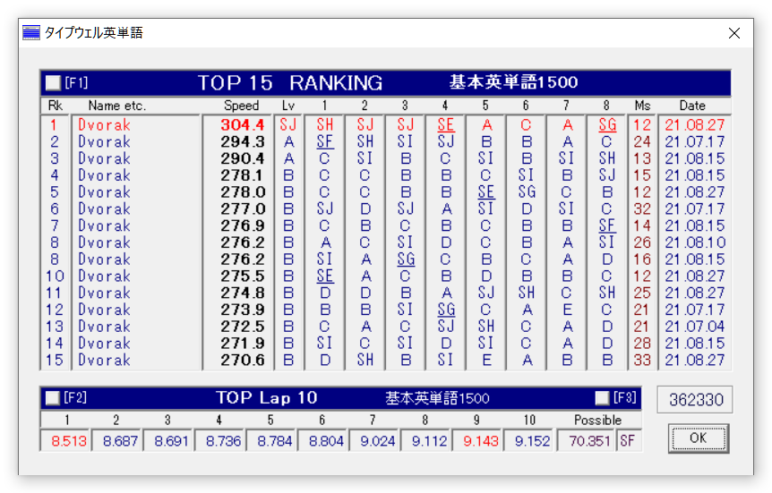

事実上80日目くらいなんだけど、ようやくA超えた。
タイプウェル英単語では測れないんだけど、Programmer's Dvorakの数字と記号にもようやく慣れてきて、特に難しかった数字もそこそこ打てるようになってきた。
そもそもQwertyのときは、最上段はほとんど手を離して打っていたり見て打っていたことが多くて、今のようにブラインドタッチはできていなかったような気がする。よく使うカッコとかは手が覚えていたりしたけど、だいぶホームポジションを崩していたので、慣れるとホームポジションのまま打てて楽しい。
一方で、Dvorakは普通の英単語はかなり打ちやすいのだけど、一部の単語は慣れないととても打ちづらい傾向にある。例えばlsとlnは、UNIXコマンドとして頻出なので結構最初は苦労した。でも慣れると薬指を縦にスライドするだけだし、lsに至っては頻出過ぎて指が自然と楽に打てる打ち方を編み出すので、慣れるとそうでもない。pythonのpyとかも慣れないと打ちにくいけど、たくさん打っているうちに慣れた。（注: 自分は日本語は新下駄配列なので、英語に限った話。）
でも左手を器用に使うストロークには未だにあんまり慣れてなくて、popularやpeople、exportのように、少し打つのに時間がかかる単語は未だにいくつかある。
打ちにくい単語に出くわすたびに、Qwertyに戻そうかなーと思ってしまうのだけど、実は最近Qwertyの英語入力が全然できなくなっちゃって、たまにはQwertyも打たないとヤバいなぁと思う。とはいえ、数分打てば慣れて自然と打てるようになるのでそこまで問題じゃないし、なぜかローマ字入力としてのQwertyは最初から何不自由なく打てる。ホント不思議。
そうやって数分Qwertyを打って、やっぱりDvorakの快適さに気づいて戻す、という感じ。最近はVimもDvorakで普通に打ってるので、下手に一瞬だけQwertyに戻ると全然打てない。頭がQwertyに慣れるのに数分かかるので、Qwertyを打つ日（自分のじゃないパソコン使ったり、キーリマップできないPC使ったり）は打つ日と決めれば案外普通に打てるけど、混ぜると混乱する。それでも、Ctrl同時打鍵はQwertyになるようにしていて（Ctrl-QwertyとかCmd-Qwerty）、ショートカットキーは何も混乱なく打てるのでホント不思議。人間の頭ってどうなってるんだろう。
Programmer's Dvorakの記号についてはとても良くできているなぁと思っていて、慣れるとホント元には戻れない。プログラムで頻出する順に打ちやすい場所に配置されているのが打つとよく分かるので、仮に他の配列に変えたとしても記号はこの位置で打ちたいなぁと思うけど、QwertyでいうQ,W,E,Zの位置にも記号があるので、難しいだろうな。
速度については、さっきの打ちにくい単語の件があるのでQwertyに比べてさほど最高速は速くないような気がするし、単語ごとに相当に速度差がある配列なんじゃないかなという気が最近していて、その分だけよく使う単語は快適に打てるんだろうと思う。自分は打鍵速度より快適さを重視してるし、新下駄配列同様にDvorakも快適さの割に高速打鍵できる配列なので、打っていて気持ちいいなぁと感じる限りは使いつづける気がする。
個人的にプログラムを書くのが楽しくなった気が最近してて、今までプログラム書くの辛かったのは思考過程だけじゃなくて打鍵にもあったのかなと思ったりもする。でも速度面はQwertyで今まで問題はなかったし、今でもQwertyの方が速度的には速く打てるので、改めて速度と快適さはそんなに比例しないような気がする。とはいえ、あんまりにも打鍵が遅いと場面によってはイライラすると思うので、バランスは大事なのかなと。
少なくとも、このブログ然り、長時間打っていてとても楽しいので、そういう意味で、たまにQwertyが打てなくて数分困るくらいのデメリットならアリかな。とはいえ1ヶ月から2ヶ月くらいは全然打てなくて苦しい期間があったので、新下駄配列も同様に、手放しに他人に勧められるものではない気がする。（その苦しい期間もいざとなったらQwertyで打てばいいのだけど、あんまりQwertyに戻してるとホント上達しない。それが239日目の所以であり……。）